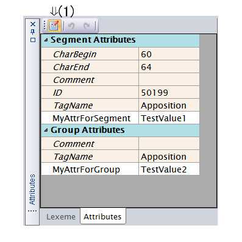
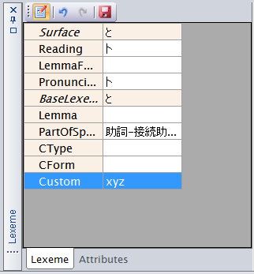

ここでは、Attribute(属性)パネルを用いて、アノテーション単位での属性を編集する方法について述べます。
準備
(1)
Dependency パネルを編集モードにします。KWIC Viewの行をダブルクリック（または行選択状態でリターンキー押下）することにより、その文の編集モードとなります。Dependencyパネルのツールバーにある「編集モード」ボタン  がチェック状態になっていることを確認します。もしチェック状態でなければ、同ボタンをクリックすることで編集モードになります。
がチェック状態になっていることを確認します。もしチェック状態でなければ、同ボタンをクリックすることで編集モードになります。
DepenendecyパネルとAttributeパネルの編集モードは自動的に同期します。編集モードの切り替えはDependencyパネルで行います。Attributetパネルにも同じボタン（下図(1)）がありますが、これは編集状態確認のためにあるもので、クリックしても何も起きません。
(2) もしAttributeパネルが見つからないときは、メニューの "表示" - "Attributeパネル" をクリックしてメニュー項目にチェックの付いた状態に切り替えると表示されるようになります。
属性の選択と表示
属性パネルには、以下のアノテーション要素の属性が表示され、いずれも同じ方法で編集することができます。
- Document
- Sentence
- Segment
- Link
- Group
Segment, Link, Groupは、Dependencyパネルで当該要素上にマウスを移動することによりその要素の属性が表示されます。また、Dependencyパネルの背景部分でマウスをクリックすると、Sentenceとその文の属するDocumentの属性が表示されます。
下に、Segment, Groupの属性が表示された状態の例を示します。

属性の編集
表の中で、色の付いた行は編集不可(Read Only)属性であり、これらは確認のみが可能です。白い行が編集可能な部分です。
表の上でマウスの右ボタンをクリックするとコンテクストメニューが開きます。

属性の追加
"Insert Row"により新しい行を追加し、その内容を入力することができます。
属性の削除
"Remove Row"により選択行を削除することができます。
Cut, Copy, Paste
コンテクストメニューまたはショートカットによりこれらの操作も可能です。
属性のセーブ
編集中に他のアノテーションを選択すると、Attributeパネルはそのアノテーションの情報に切り替わりますが、編集内容は保持されており、再び元のアノテーションを選択すると続けて編集が可能です。 編集内容を確定させるには、Dependency パネルのセーブボタンをクリックします。この操作により、Dependencyパネル上で行ったアノテーション編集内容と一緒に、属性編集結果もDBに保存されます。
（付記）LexemeパネルでのLexiconへの属性付加
Lexemeパネルにおいても、Attributeパネルとほとんど同じようにしてLexemeの属性を編集することができます。 Lexemeパネルは、KWIC Viewでのマウスの動きと連動して対象の単語が選択されるようになっています。編集したい単語を表示した状態で、Lexemeパネルの編集モードボタンをクリックすれば、編集モードに入ることができます。

Lexemeパネルの編集はDependencyパネルとは無関係であり、単独で動作するものであるため、Lexemeパネルには独立した編集モードボタンとSaveボタンが存在しています。
また、Lexemeにおいて編集可能なのはSurface, Base以外の単語プロパティと、"Custom"プロパティのみであり、独自の属性を追加することはできません。"Custom"プロパティがアノテーションにおける属性に相当します。
Lexemeの各出現に対する変更ではなく、ローカル辞書にあるLexemeの変更です。個々の出現を編集する場合は、DependencyパネルのMorpheme変更機能を用いてください。